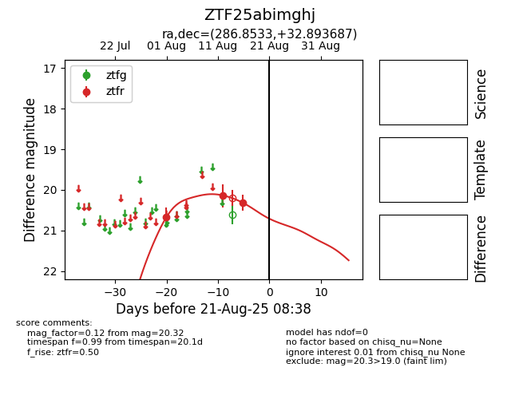

Target ZTF25abimghj at 2025-08-21 08:38, see:
FINK: fink-portal.org/ZTF25abimghj
Lasair: lasair-ztf.lsst.ac.uk/objects/ZTF25abimghj
ALeRCE: alerce.online/object/ZTF25abimghj
alt names
ZTF25abimghj (ztf,alerce)
coordinates:
equatorial (ra, dec) = (286.8533,+32.89369)
galactic (l, b) = (64.2674,+11.27904)
photometry
last ztfr=20.32
3 ztfr detections
